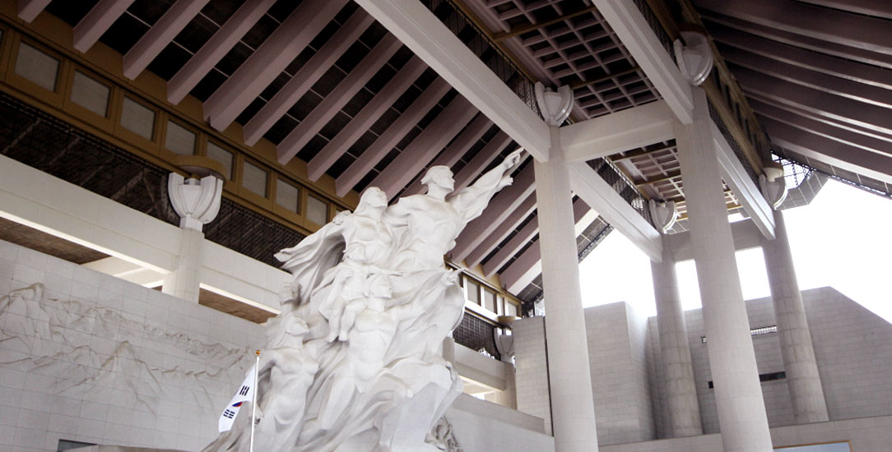
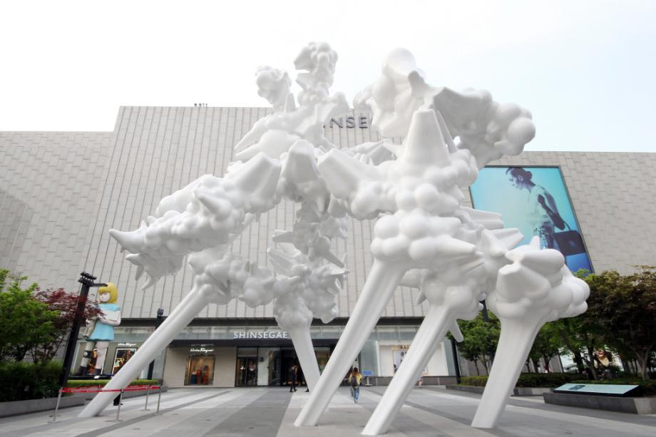
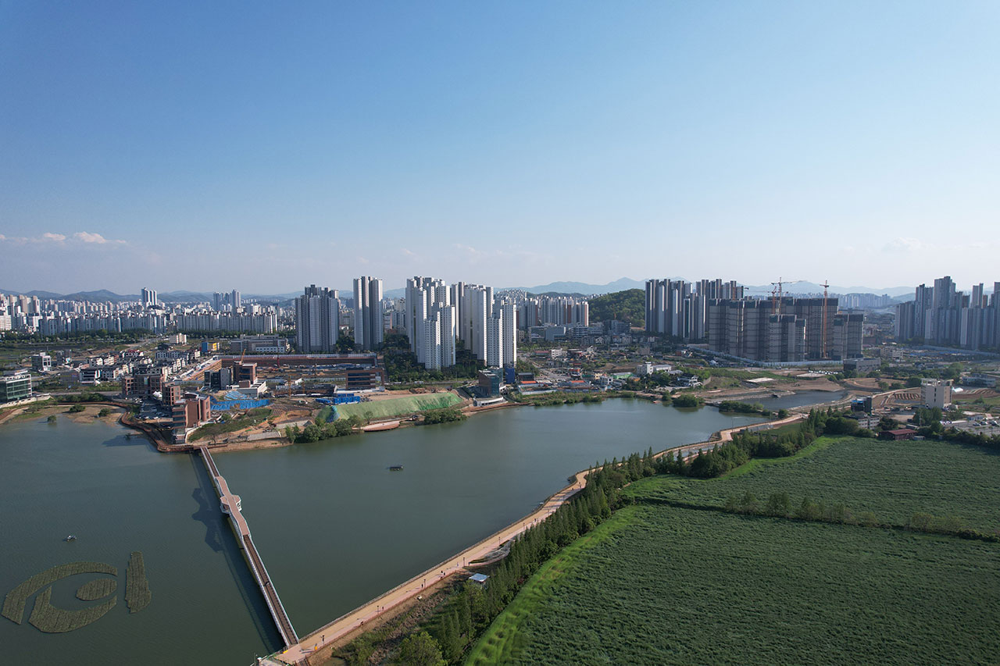
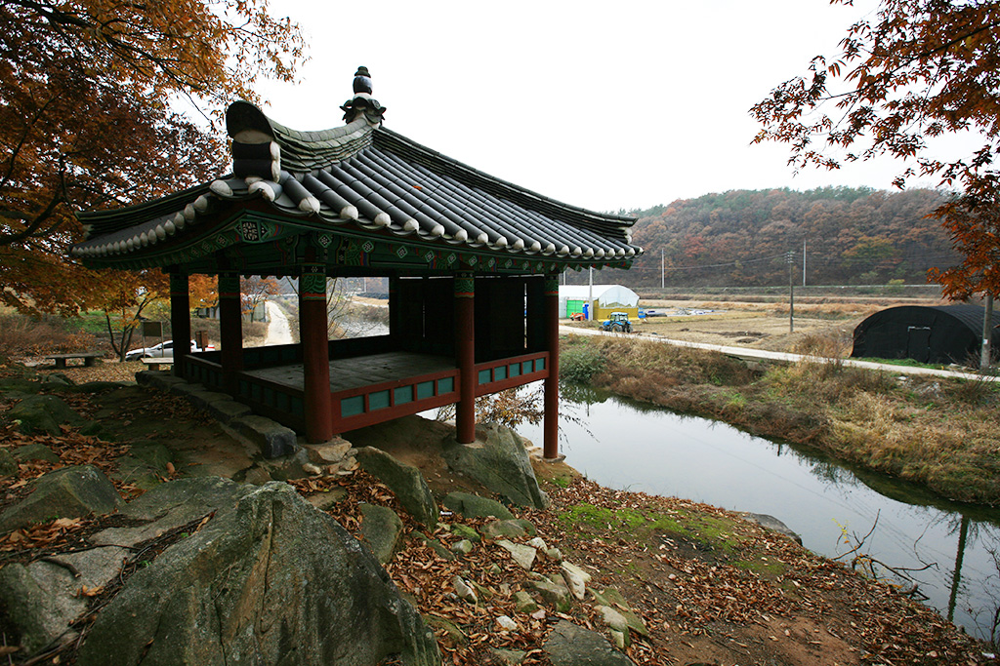

VISIT INFORMATION CHART
방문자 정보 차트
시간대별 방문자 차트
8경별 총 방문자 차트
- 월
- 화
- 수
- 목
- 금
- 토
- 일
VISIT INFORMATION MAP
명소 8경 지도

독립기념관

유관순열사 사적지

천안 삼거리 공원

태조산왕건길과 청동대좌불

아라리오조각광장

성성호수공원

광덕산

국보 봉선홍경사갈기비